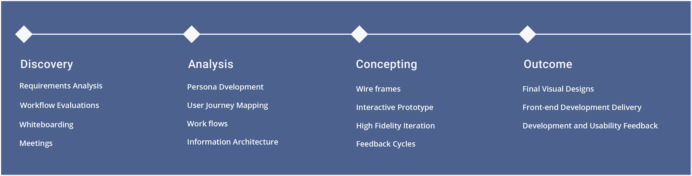
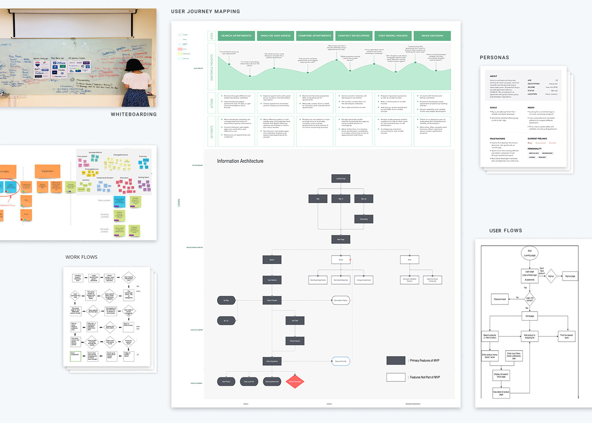
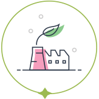
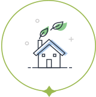
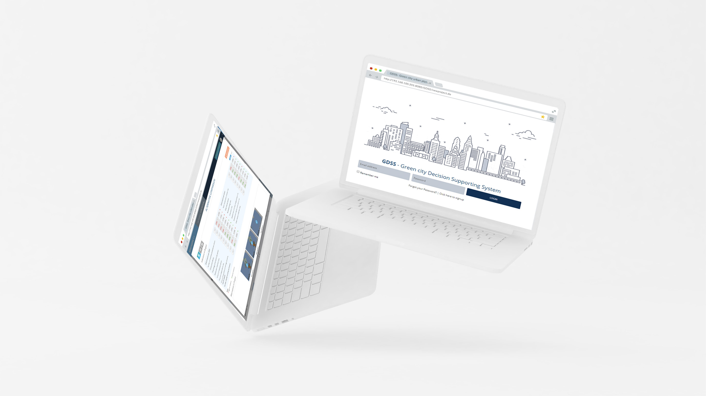

Please note: This work is protected by Ministry of Contruction of Vietnam.
Please note: This work is protected by Ministry of Contruction of Vietnam.
GDSS PROJECT
Green city urban planning decision support system construction project
Overview
GDSS project - Green city urban planning decision support system construction as its name which is web-based system integrated GIS technology. The project aims to reduce greenhouse gas emissions, ensure climate change adaptation and make reasonable and effective use of natural resources. It also a system which a turn-point of Digitalizing paper-based data into digital work. The system displayed respossively on Deskop, Tablet and Mobile resolution. As the main UI/UX designer on the project, I worked closely with Project manager and stakeholders (experts and governors), and user (experts) to define goals and validate concepts. The timeline for the project was 2 years for developing and going alive. It’s big project in a long-term so that there was a lot of iterating and presenting to test. I also collaborated with JungdoUIT development team to implement my designs and provide design QA support up until launching the system.
My role
Main UI/UX Design
User group research
Regular meeting together PM with Stakeholders, Experts
Generate and analyze requirements
Wireframing
Interaction Prototype
Visual Design
Design system
Front-end development
Client
Ministry of Construction of Vietnam
Agency
JUNGDO UIT Lt.
Completed
2018
Collaborates
Project managers, Developer Team,
Business Analysis Team.
Tools
Illustration, Photoshop, Axure
Visual Studio
The Problems
Vietnam faces various urban problems such as infrastructure shortages and environment degradation as a result of rapid economic development and urban population growth. On site, the urban planning in Vietnam was still heavily based on paper works. It also the time they want to change into digital works and digitalizing most of data, such as local plan, master plan, indicators (Co2, population,..)
Users
The primary user of the system is experts who designs the plan for urban and green city.
The secondary users are governors who have right to view not edit or change anything in the plans. Therefore, they are limited with right granted from the system, there are some inactive features for them.
Goals
The proposed GDSS integrates the capabilities of GIS and GeoNURIS techology into the web platform to provide appropriate spatial analysis and decision support tools. The system enable experts and governors to analyze locality, setup targets by Support looking up C02 emissions and setting C02 minimization goals, Forecasts of population according to the number of planning years, also, Planning according to each subject, Comparing / analyzing green urban planning year according to each proposed option.
The system should be simple, optimize ang digitalizing their works for planing experts who are the primary user.
Defining the process
According to the strategic development of the project, we broke development the project into four key phase, each comprised of important steps. This approach helped our plan out the project roadmap, determine key milestones and deliverable dates. It’s a long term project, and the requirements changed many times, we worked with an agile, sprint-based process allowed me to iterate on and validate potential solutions early and often. The Concept phase repeated as a series of week-long sprints to work through the different features.

Discovery & Analysis
In this phase, we met with stakeholders for series of workshop to learn as much about their current workflow, set project goals, objectives of project, user’s needs as possible. On site, initially, I met project manager to define the project roadmap, whiteboard sketch high-level concepts. Then I aggregate those information to get requirements from different user types, understand their challenges, and learn about their individual goals for optimizing their workflow.
Having these type of insights, I began to synthesis common themes. I created persona profiles highlighting each unique user’s tasks and goals, then created journey maps to understand the relationship between different user types of the system. These helped to guide the development of low fidelity flows to works out screen to screen interaction.

Concepting
I made the wireframe iteratively to define the information architecture of displays. I explored various approaches to adapt their workflow into digital way and optimize the best solution for the user.
I collaborated with experts and development team along the way to validate the concepts and gather feedback to improve the concept.
GDSS.
 Design solutions
The system solution is a secure web platform system consisting of creating master plan as well as local plan, analyze the status, setup the objectives, filter and lookup the indicators of green city and predict green indicators along year and compare.
The design should be simple, display logically and systematically many types of information from number to text, table to grid, charts and images. And one more important thing is displaying and interacting with map (GIS information) on the web-based system.

Success and challenges
The launch of the GDSS system was a success, and stakeholder were excited and gave compliment about the solution. The system is still used in the Ministry of Land and Construction as a tool to plan urban and green city.
The main challenge when I participated in this project was the requirements from the stakeholders changes many times. Because this was the first time they involve in the new type of system and digitalizing their paper work, so they also confused. This means I have to change the concepts many time and make the prototype according to the changes as well. It took a long time in the phase of aggregating and analyze requirements because of their complex workflow.